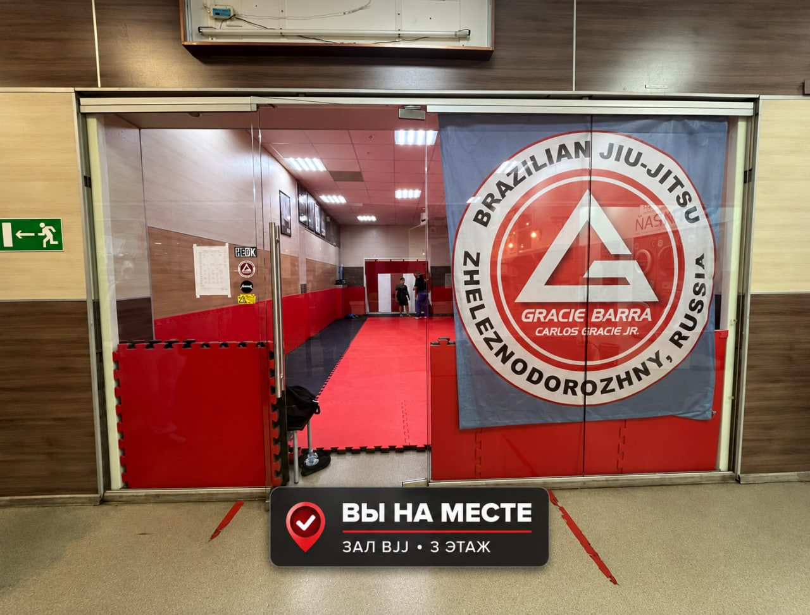
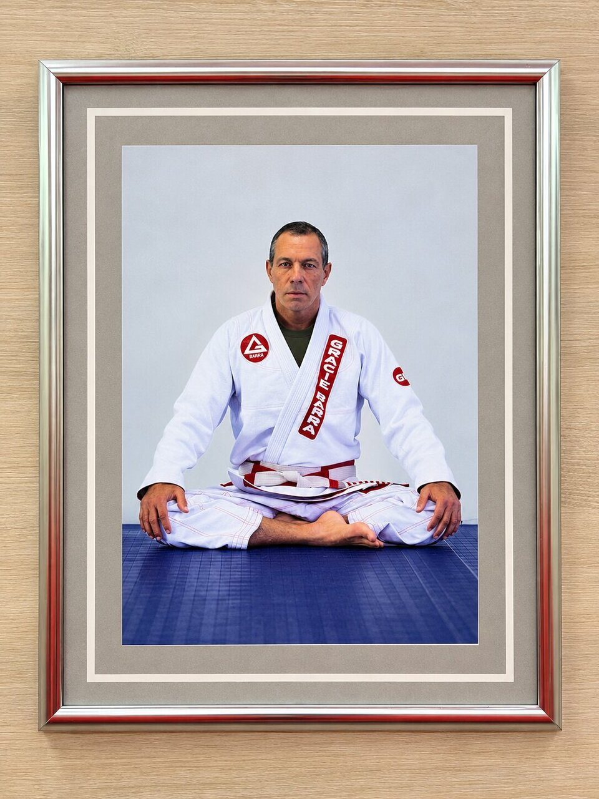

Пионерская, 2А. Первая тренировка бесплатно, абонемент от 7 500 ₽ в месяц.

Группы по возрасту. Опыт не нужен: тренер подберёт группу на первой тренировке.
Сегодняшний день отмечен красной рамкой. Не знаете, какая группа подходит? Тренер подскажет.
Бесплатно
Первая тренировка в любой группе. Нужна только запись.
8 500 ₽
Абонемент на 12 тренировок в месяц.
7 500 ₽
Абонемент на 8 тренировок в месяц.
Первая тренировка бесплатно. Позвоните или напишите, и тренер подберёт группу.

Тренировка один на один с Михаилом. Время подбирается под вас.
1 500 ₽ за тренировку
3 этаж. Балашиха, мкр. Железнодорожный

Тренировки: Вт и Чт с 18:00, Сб с 10:00.
Написать в ВК · Написать в Telegram
Построить маршрут

Первая тренировка бесплатно. Позвоните или напишите, и тренер подберёт группу.
Залы в Балашихе и Железнодорожном входят в академию Gracie Barra, созданную основателями бразильского джиу-джитсу. Девиз академии: джиу-джитсу для всех, любого возраста и уровня.

«В джиу-джитсу нет проигрыша. Ты либо побеждаешь, либо учишься»
Девиз отражает философию бразильского джиу-джитсу: поражение — это урок. Разбираем ошибки и становимся сильнее, на татами и в жизни.


Первая тренировка бесплатно. Позвоните или напишите, и тренер подберёт группу.
Отзывы учеников и родителей с Яндекс Карт.
Сын занимается уже почти год и всё очень нравится! Виден прогресс и не малый! Очень нравится атмосфера в академии: здесь всем рады, нет напряженности, мой ребёнок чувствует себя уверенно и спокойно. У нас замечательный тренер Михаил! Тактичный, находит подход к каждому своему воспитаннику. Но и по-хорошему строгий: держит дисциплину, но без лишнего давления. Что радует, на каждом занятии что-то новое: приёмы, упражнения, проходят различные турниры. В общем, однозначно рекомендую данную академию и детям, и взрослым!
Михаил — потрясающий тренер! Атмосфера на тренировках 🔥, это надо побывать, словами не описать :) Пришёл с нуля (до этого только дзюдо), быстро осваиваю новые техники. Михаил внимательно объясняет и показывает, научиться делать неправильно просто не получится, т. к. у тренера индивидуальный подход к каждому. Всем, кто хочет заниматься джиу или просто увлекается борьбой, очень рекомендую Грейси Барра Балашиха! Приходите в наш тёплый коллектив
Отдал двоих своих сыновей (5 лет и 14 лет) в данный клуб. Отличный тренерский состав, доброжелательная атмосфера и в то же время дисциплина на высоком уровне 💪
Отличное место, где можно поработать физически и отдохнуть эмоционально. Тренер Михаил — отличный специалист своего дела и очень приятный человек!
Хороший и внимательный тренер Михаил, сын доволен, ходит больше года. Михаил организует спортивные сборы летом — это нечто: и тренировки, и велопрогулки, футбол, купание в речке, сапборды. Полный восторг!
Нашли клуб просто по Яндекс Картам, почитали отзывы. В итоге занимаемся третий год. Очень хороший тренер, дети часто ездят на сборы. Всё супер!
Мой сын ходит на тренировки по БЖЖ с большим удовольствием. Очень нравится подход Михаила к детям: спокойно и понятно объясняет, поддерживает, поправляет…
Этот зал единоборств — самое лучшее место, в которое вы можете пойти заниматься или отдать своего ребёнка. Тренер Михаил самый терпеливый, самый профессиональный и самый добрый человек. Занятия проходят в отличном коллективе, с бешеной энергетикой и просто в кайф. Так что приходите заниматься и обучаться джиу-джитсу)
Мой сын с огромным удовольствием занимается в клубе уже 4 года! Отдельная благодарность тренеру Михаилу Валерьевичу за профессионализм, умение мотивировать детей…
Сыну очень нравится ходить на эту секцию. Классный тренер! Дружелюбные ребята! Часто принимают участие в соревнованиях, летом командой ездят отдыхать)! Ребёнку нравится, и родители счастливы)!
Сын с удовольствием занимается в клубе 3 года, очень доволен. Тренер Михаил Валерьевич — доброжелательный, опытный наставник. Дети принимают участие в соревнованиях…
Ходим заниматься уже третий год. Хороший тренер. Дружный коллектив единомышленников. Ребёнок занимается с удовольствием, а это самое главное.
Замечательные тренировки, братский коллектив. Закаляешься как духовно, так и физически. Одним словом — отдушина. Смело советую
Самый лучший тренер Михаил, уютная атмосфера и дружная команда, что ещё нужно? :)
Команда, как большая и дружная семья!
Отзывы о зале в Балашихе. Целиком они на Яндекс Картах.
Балашиха, мкр. Железнодорожный, Пионерская ул., 2А, 3 этаж. Открыть на Яндекс Картах.
В этом зале по вторникам и четвергам; в субботу взрослые в 10:00, дети в 12:00. По будним дням: дети с 5 лет в 18:00, дети с 8 лет в 19:00, с 14 лет вместе со взрослыми в 20:00, взрослые в 21:00.
Первая тренировка бесплатно. 12 тренировок в месяц стоят 8 500 ₽, 8 тренировок 7 500 ₽. Индивидуальная тренировка 1 500 ₽.
Удобную спортивную одежду, воду и шлёпанцы. Кимоно на первое занятие не нужно. Приходите за 10 минут до начала.
Нет. Новички начинают с основ, нагрузку тренер подбирает по уровню.
В джиу-джитсу нет ударов: борьба, контроль и болевые приёмы под присмотром тренера. Сдаться можно в любой момент хлопком по партнёру или ковру.
Балашиха, ул. Заречная, 22. Пн, Ср и Пт с 18:00.